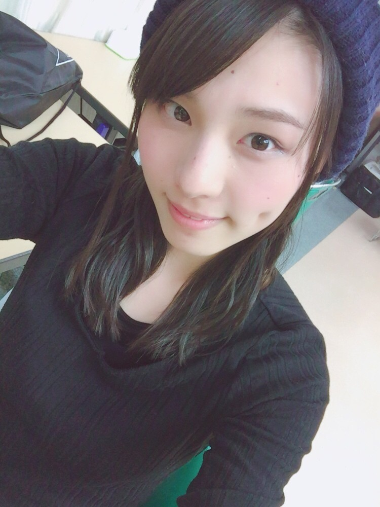
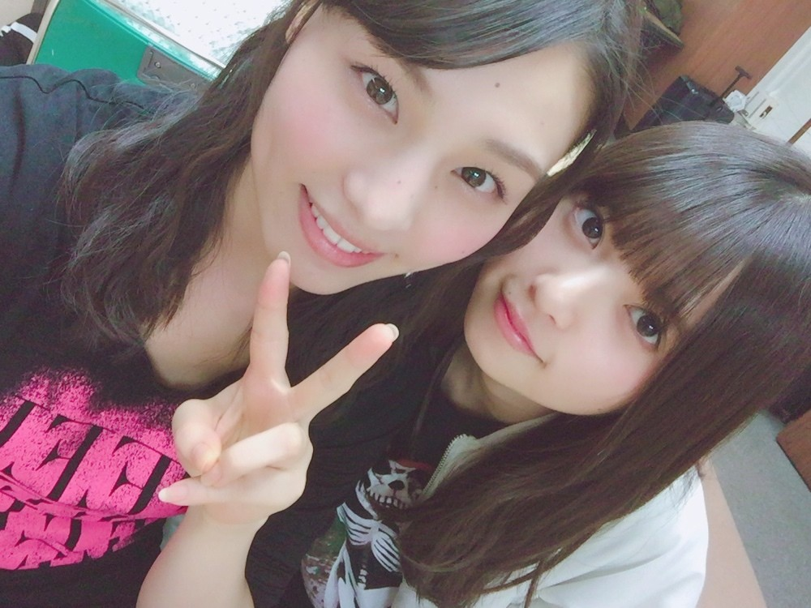
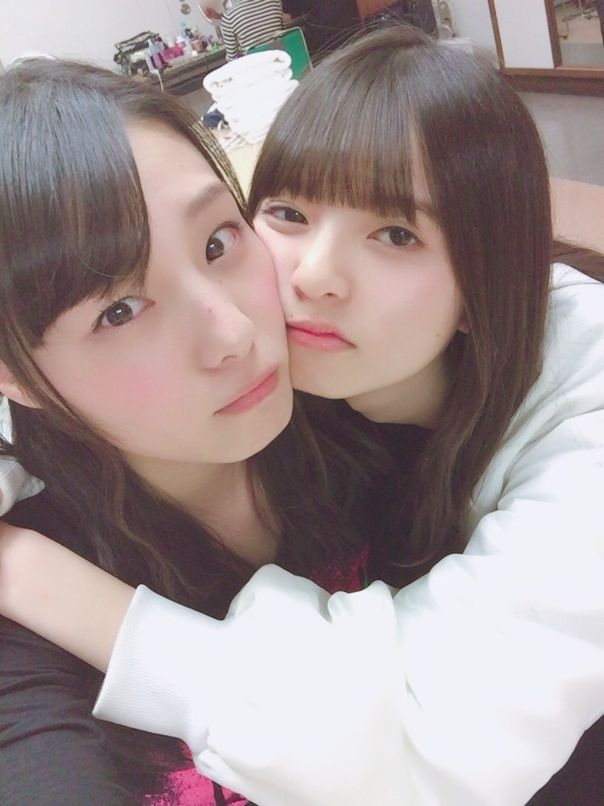
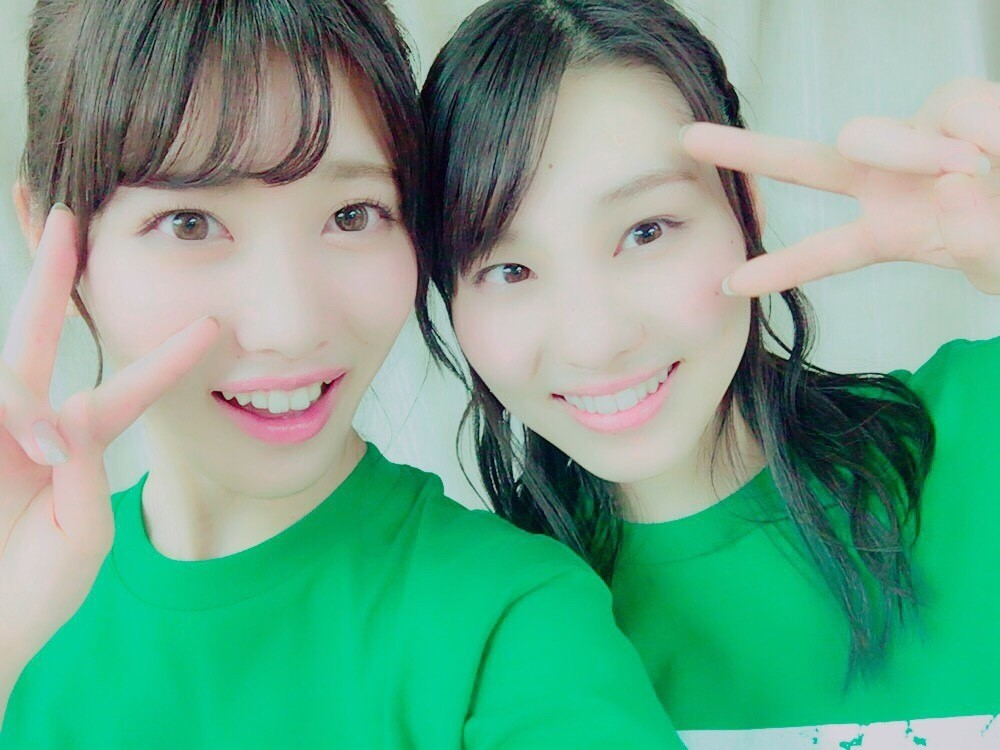
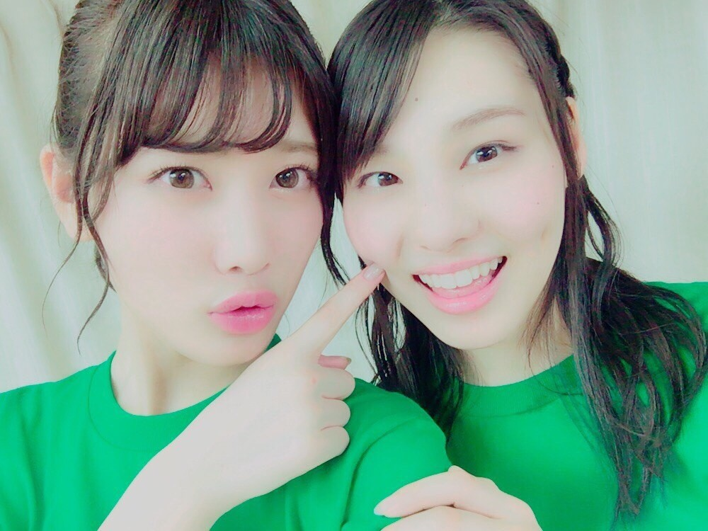

| 2016/12 09 Fri | そして、強くなる_(．．*)vol.145 |
みなさんこんばんはー！
相楽伊織です！

武道館アンダー単独公演
今日で2日間が終わりましたー(｡> <｡)
まずは
今回も全員センター企画がありました！
私は1日目！！
全て表題曲だったのですが
私は｢制服のマネキン｣をセンターで
踊ることになって、
リハーサルの時も
あまりカッコつかなくて
すごい不安だったんですけど、
｢皆んなに負けてられない｣と思って
本番は自分史上1番の
睨みでなんとか乗り切れた気がします(^^;
でも不思議と
緊張はしてなくて
全力で出来たなって感じでした！！！
コールもすごく大きくて
自信になりました！！
本当にありがとうございましたm(_ _)m
2日目は
乃木團のみんなが生演奏で
4曲
[あの日 僕は咄嗟に嘘をついた]
[生まれたままで]
[狼に口笛を]
[涙がまだ悲しみだった頃]
を弾いてくれて
それもロックな感じですごい楽しかったな♪♪
飛鳥ちゃんのドラムも
カッコよかったし
ひめかさんの歌もやっぱり凄かったし
花奈さんもまあやさんも
まひろさんも能條さんも
みんなみんな
本当にカッコよかったヾ(＠⌒ー⌒＠)ノ

今回のライブで
なんか、、
活動を初めてから
ずっとずっと心にあったわだかまりが
無くなった気がして
それが何だったかも
分からないけど
｢あ、今、楽しい｣
って思えたライブでしたヽ(*^^*)ノ
もちろんミスもあったし
もっと冷静にならなきゃいけない所もあったけど、
それも全部ひっくるめて
とっても楽しかったですヽ(*^^*)ノ
タオルも沢山あったし
うちわも作ってくれたり
サイリウムを私のカラーで振ってくれたり
本当に嬉しい気持ちで
いっぱいです！
来て下さった皆さん
本当に本当にありがとうございました(^^)

久しぶりに飛鳥ちゃん♡
改めて
今回のライブはすっごい楽しかったーーー！！
ダンスももっと上手くなりたいって思ったし
歌ももっと上手くなりたいって思った！
あと、
負けたくないって思いました。
勝ち負けの基準は無いんだけどね。
へへ、(´▽｀)


今回もペアとかシンメで
ライブ中に何回目を合わせたことか(。-∀-)
また更新します！
i o r i .

コメント(364)
2016/12/09 23:48